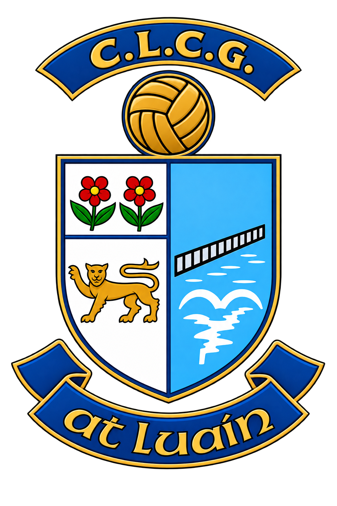

ATHLONE GAA
| Pitch | Date | Time | Team | Type | Opponent |
|---|---|---|---|---|---|
Home — What's happening on each pitch right now, and what's next. Tap a pitch card to jump to its full schedule.
Schedule — The full list for the next 8 days. Filter by pitch, by today, or by matches only, or search by team.
Matches — Just the matches, grouped by day, this week or next. Tap one for full details or to share it — see Scoring below for adding or editing a result.
Scoring — The only part of this app anyone can write to, so here's exactly how it works. Open a match and tap Add Score (or Edit, once one's recorded); use the +/− buttons to tally each side's goals and points — there's no free-text box to get wrong. Anyone using the app can do this, Wikipedia-style, with no login. It's a casual, best-effort record, not the official one — please only enter a score you're confident actually happened. Editing opens a few hours before throw-in and stays open until the day after the match; a save is immediate and shows live for everyone else looking at that match, and can be corrected again by anyone, including you, any time the window's still open.
More — This tab: dark mode, pitch & app info, and how to get in touch.
Install the app to your home screen for one-tap access.